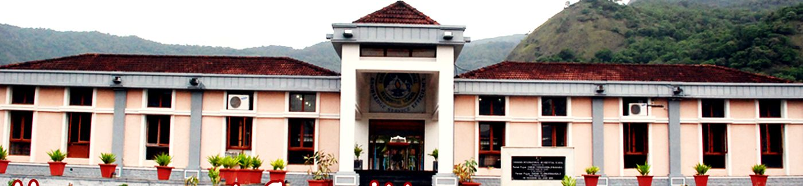

A vision carried from the 1970s to a hundred acres in the Siruvani foothills, and the ninety-six students who began it.
The origin
A School Imagined Before It Had a Place.
The idea of an international school in India was conceived by Pujya Gurudev
Swami Chinmayananda. Sites were weighed in Bangalore, Lucknow, the Andamans and Himachal
Pradesh before Coimbatore was chosen — and the hundred acres in the Siruvani foothills
were bought one rupee at a time.
In 1984 Swami Sahayanandaji traversed the length and breadth of India on
foot, making the initial collection of one rupee from each individual towards the purchase
of the land. Ten years later Pujya Guruji Swami Tejomayananda took up the vision and
concretised it with, as the school’s own account has it, unfailing vigour and energy.
On 6 June 1996 the Chinmaya International Residential School was inaugurated
by Pujya Swami Chidanandaji, President of The Divine Life Society. It opened with
ninety-six students in Grades V to VIII and eleven academic staff.
The first school was led by Dr. Jaya Venugopal, with Brahmacharini Sumati
Chaitanya and Brahmachari Samahita Chaitanya as its spiritual guides, and with Swamini
Vimalanandaji and Dr. G. S. Keshawamurthy among those who carried it into being.
The school’s own history records its growth to 577 students, 69 faculty
and 78 staff, drawn from 23 Indian states and 19 other countries.
[Current figures to be confirmed by the school.]

In the school’s own words
Through the Years.
The school’s silver jubilee film, made from its own archive —
the campus, the classrooms and the faces that carried CIRS from 1996 onwards.
Five moments, in order. Scroll to follow the line; rest on a year to bring
its frame forward.
1970s
Archival photograph — the vision
The vision
Pujya Gurudev Swami Chinmayananda conceives an international school in
India. Bangalore, Lucknow, the Andamans and Himachal Pradesh are each considered;
Coimbatore is chosen.
1984
Archival photograph — the walk for the land
One rupee at a time
Swami Sahayanandaji traverses the length and breadth of India on foot,
making the initial collection of one rupee from each individual towards the purchase
of the land.
1994
Archival photograph — the vision concretised
The vision takes form
Pujya Guruji Swami Tejomayananda proceeds to concretise Pujya
Gurudev’s vision, and the school begins to become a place rather than an
intention.
6 June 1996
Archival photograph — the inauguration
The school is inaugurated
The Chinmaya International Residential School is inaugurated by Pujya
Swami Chidanandaji, President of The Divine Life Society.
1996
Archival photograph — the first roll
Ninety-six students
The school opens with ninety-six students in Grades V to VIII and
eleven academic staff, led by Dr. Jaya Venugopal, with Brahmacharini Sumati Chaitanya
and Brahmachari Samahita Chaitanya as its spiritual guides.
Still being written
More of the Story is Coming.
Twenty-five years leave more behind than five milestones. Further archival
photographs, the accounts of the people who taught and boarded here, and the years between
1996 and now will be added to this page as the school opens its archive.
[Placeholder — further milestones, photographs and first-hand
accounts to be supplied by the school.]
Have a photograph, a document or a memory from the early years?
Send it to the school and it can be added here.
Under construction
This page is still being written. Photographs, names and figures marked
in brackets are placeholders awaiting the school, and more will be added here in the weeks
ahead. Tell us what is missing.